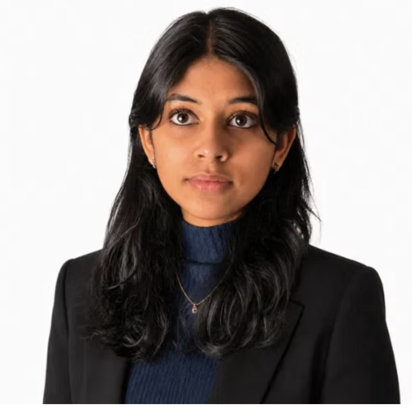
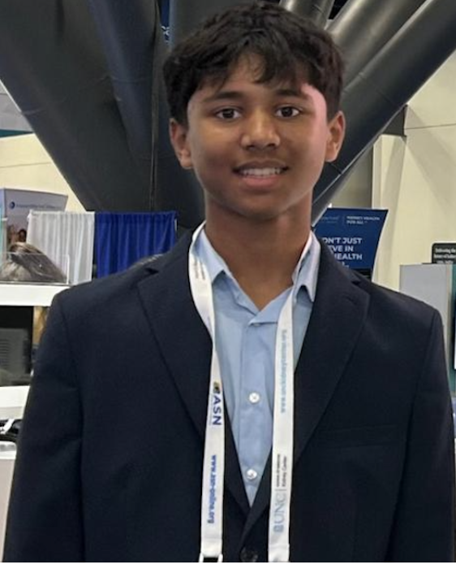
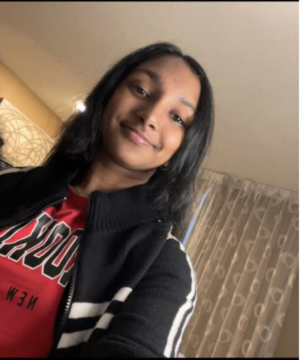
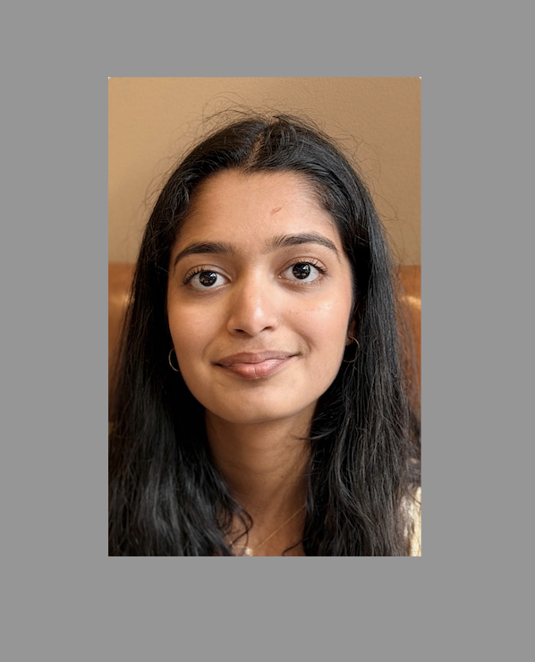
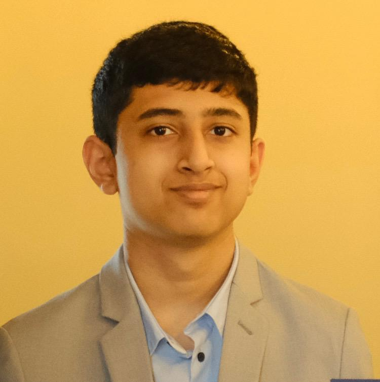
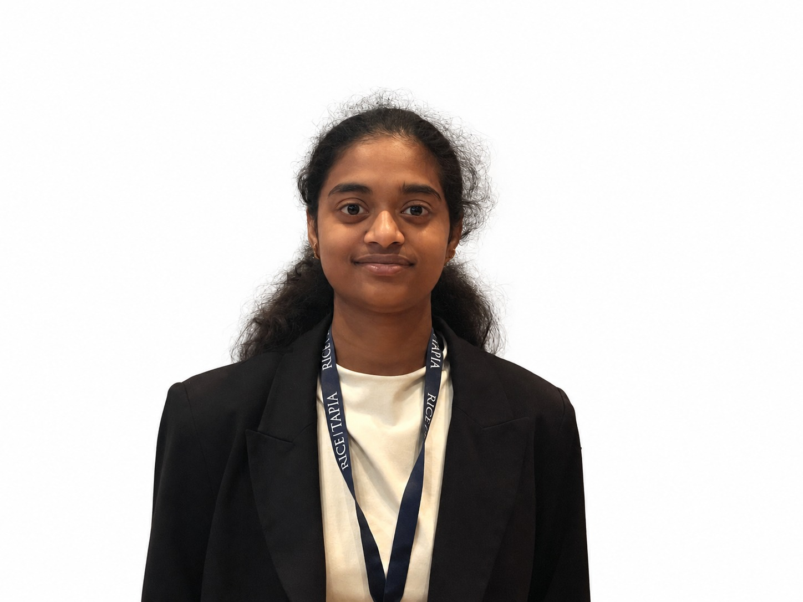
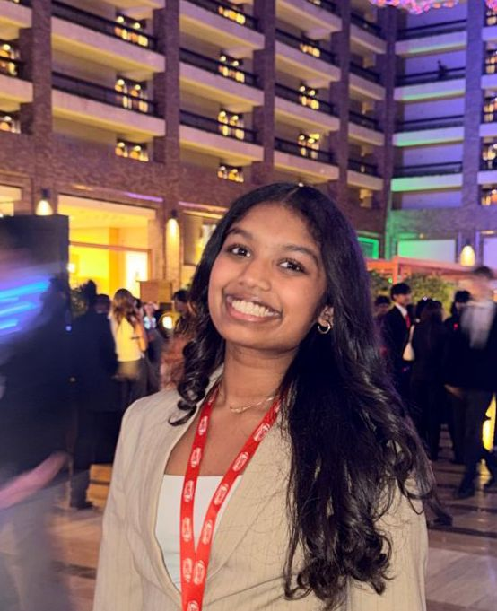

Meet the high school students who bring competition experience and STEM passion to every class.

Adhya is currently a high school student at Dulles High School. She is passionate about biology, genetics, medicine, and scientific problem-solving. She enjoys exploring genetics, microbiology, crime scene analysis, and human anatomy and has extensive experience participating in Science Olympiad and other STEM competitions. Through TORCH, she hopes to share her enthusiasm for science and help younger students build confidence, curiosity, and strong problem-solving skills.

Aditya is currently a high school student at Dulles High School. He has a strong interest in engineering, technology, and analytical problem-solving. He particularly enjoys CAD Design and Code Busters, where creativity and logical thinking come together. Through TORCH, Aditya hopes to help students develop practical problem-solving strategies while making challenging STEM concepts approachable and enjoyable.

Akshara is currently a high school student at Elkins High School. She is interested in health science and investigations. Her Science Olympiad events are Disease Detectives and Scrambler, which is an engineering build event focused on force and motion. Through Disease Detectives, she explores disease patterns, outbreaks, and scientific problem-solving.

Anvitha is currently a high school student at Dulles High School. She is passionate about life sciences and scientific investigation, with particular interests in Anatomy & Physiology and Experimental Design. She enjoys understanding how biological systems work and applying the scientific method to solve problems. Through TORCH, she hopes to encourage younger students to ask questions, think critically, and become confident STEM learners.

Jairam is currently a high school student at Elkins High School. He enjoys exploring science from both microscopic and cosmic perspectives through Chemistry and Astronomy. His interests combine scientific reasoning, quantitative problem-solving, and curiosity about how the natural world works. Through TORCH, Jairam hopes to make complex scientific concepts easier to understand and inspire students to explore science beyond the classroom.
Shruthi is currently a high school student at Dulles High School. She enjoys challenges that combine mathematical reasoning, logic, and creative problem-solving. Her Science Olympiad interests include Code Busters and We Got Your Number, where she applies analytical thinking to solve complex puzzles and problems. Through TORCH, Shruthi hopes to share her problem-solving strategies and help younger students build confidence while discovering the fun and excitement of STEM competitions.

Veda is currently a high school student at Dulles High School. She is interested in environmental and applied sciences, particularly Water Quality and Food Science. She enjoys learning how scientific principles connect to everyday life and the environment around us. Through TORCH, Veda hopes to make science engaging and understandable while helping students develop the knowledge and confidence needed for Science Olympiad.

Vibha is currently a high school student at Dulles High School. She enjoys Earth and space science and the challenge of understanding our natural world. Her interests include Rocks & Minerals and Solar System, combining observation, identification skills, and planetary science. Through TORCH, Vibha hopes to make STEM learning interactive and enjoyable while helping younger students become confident Science Olympiad competitors.